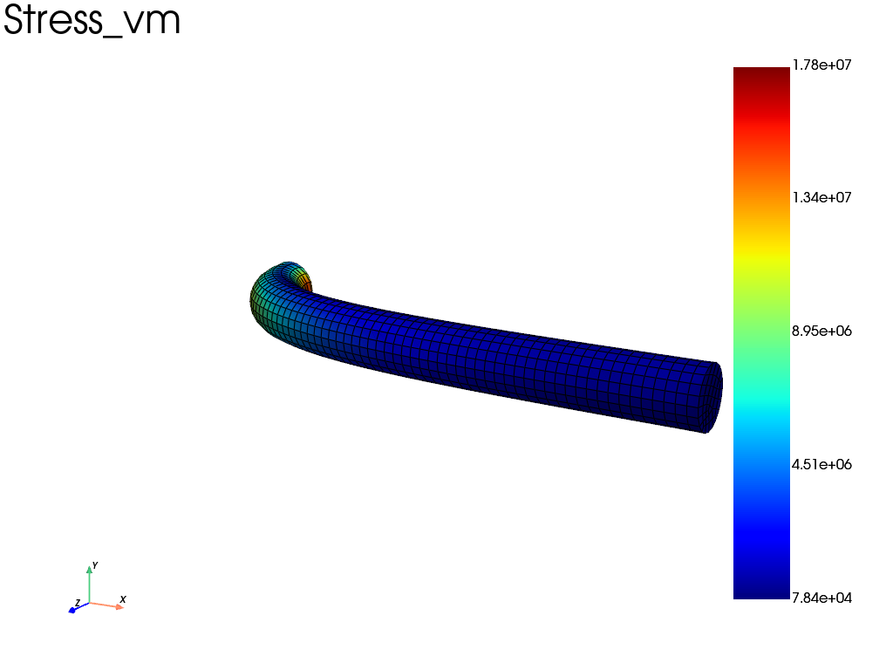

Note
Go to the end to download the full example code.
Force-driven Neo-Hookean cantilever (massive rigid cap, implicit dynamics)
Companion of the displacement-driven cantilever example: the same slender, nearly-incompressible NEOHC cylinder, but loaded by a transverse force applied to its rigid cap — the natural protocol when mirroring a dynamics engine such as ArtiSynth.
Static force control is ill-posed here: the transverse stiffness of the cap is tiny (~40 N/m at the origin, rotational ~2.5e-2 N.m/rad), so a Newton step towards the distant equilibrium leaves any convergence basin (the classical remedies, arc-length continuation or Tikhonov stabilization, are not used in this example). The robust protocol is quasi-static-by-dynamics:
the cap is a true rigid body — a
fedoo.constraint.RigidTiefor the kinematics plus aRigidBodyAssemblycarrying its 6x6 mass/inertia, so the Newmark termM/(beta*dt^2)regularizes the soft cap DOFs (this is exactly what makes the ArtiSynth mirror robust);a Newmark integrator attached at the problem level (
pb.set_time_integrator) with an unconditionally stable pair:gamma = 0.6for high-frequency damping requiresbeta >= gamma/2 = 0.30— a violating pair (e.g. the default-lookingbeta = 0.25) grows the high-frequency modes geometrically and collapses after a few tens of increments, whatever dt (fedoo now warns in that case);a slow force ramp (quadratic, gentle start) followed by a hold period so the response settles to the static equilibrium;
the safeguard line search (
mode="safeguard"), which rejects only trial states with inverted elements and never throttles legitimate large soft-mode steps. The defaultmode="natural"(affine-invariant test on the simplified Newton correction) handles them as well; a pure residual-descent line search (mode="minimize") would strangle them.
Cross-check: the displacement-driven curve gives ux(F = 20 N) = 45.5 mm
= 0.911 L; this run settles within ~2% of it (the difference is the
residual numerical damping at the end of the hold).
The tie is registered automatically when the RigidBodyAssembly is part
of the problem assembly — do not add it again (fedoo now ignores the
duplicate, which used to corrupt the MPC elimination).

Iter 1 - Time: 0.01000 - dt 0.01000 - NR iter: 1 - Err: 0.00018
Iter 2 - Time: 0.02000 - dt 0.01000 - NR iter: 1 - Err: 0.00056
Iter 3 - Time: 0.03000 - dt 0.01000 - NR iter: 2 - Err: 0.00083
Iter 4 - Time: 0.04000 - dt 0.01000 - NR iter: 3 - Err: 0.00003
Iter 5 - Time: 0.05000 - dt 0.01000 - NR iter: 3 - Err: 0.00005
Iter 6 - Time: 0.06000 - dt 0.01000 - NR iter: 3 - Err: 0.00010
Iter 7 - Time: 0.07000 - dt 0.01000 - NR iter: 3 - Err: 0.00014
Iter 8 - Time: 0.08000 - dt 0.01000 - NR iter: 3 - Err: 0.00019
Iter 9 - Time: 0.09000 - dt 0.01000 - NR iter: 3 - Err: 0.00022
Iter 10 - Time: 0.10000 - dt 0.01000 - NR iter: 3 - Err: 0.00031
Iter 11 - Time: 0.11000 - dt 0.01000 - NR iter: 3 - Err: 0.00038
Iter 12 - Time: 0.12000 - dt 0.01000 - NR iter: 3 - Err: 0.00023
Iter 13 - Time: 0.13000 - dt 0.01000 - NR iter: 3 - Err: 0.00025
Iter 14 - Time: 0.14000 - dt 0.01000 - NR iter: 3 - Err: 0.00030
Iter 15 - Time: 0.15000 - dt 0.01000 - NR iter: 3 - Err: 0.00059
Iter 16 - Time: 0.16000 - dt 0.01000 - NR iter: 3 - Err: 0.00085
Iter 17 - Time: 0.17000 - dt 0.01000 - NR iter: 3 - Err: 0.00050
Iter 18 - Time: 0.18000 - dt 0.01000 - NR iter: 3 - Err: 0.00057
Iter 19 - Time: 0.19000 - dt 0.01000 - NR iter: 3 - Err: 0.00066
Iter 20 - Time: 0.20000 - dt 0.01000 - NR iter: 3 - Err: 0.00094
Iter 21 - Time: 0.21000 - dt 0.01000 - NR iter: 5 - Err: 0.00002
Iter 22 - Time: 0.22000 - dt 0.01000 - NR iter: 3 - Err: 0.00089
Iter 23 - Time: 0.23000 - dt 0.01000 - NR iter: 3 - Err: 0.00049
Iter 24 - Time: 0.24000 - dt 0.01000 - NR iter: 3 - Err: 0.00046
Iter 25 - Time: 0.25000 - dt 0.01000 - NR iter: 5 - Err: 0.00001
Iter 26 - Time: 0.26000 - dt 0.01000 - NR iter: 5 - Err: 0.00001
Iter 27 - Time: 0.27000 - dt 0.01000 - NR iter: 5 - Err: 0.00001
Iter 28 - Time: 0.28000 - dt 0.01000 - NR iter: 5 - Err: 0.00001
Iter 29 - Time: 0.29000 - dt 0.01000 - NR iter: 5 - Err: 0.00001
Iter 30 - Time: 0.30000 - dt 0.01000 - NR iter: 3 - Err: 0.00098
Iter 31 - Time: 0.31000 - dt 0.01000 - NR iter: 4 - Err: 0.00087
Iter 32 - Time: 0.32000 - dt 0.01000 - NR iter: 4 - Err: 0.00091
Iter 33 - Time: 0.33000 - dt 0.01000 - NR iter: 5 - Err: 0.00001
Iter 34 - Time: 0.34000 - dt 0.01000 - NR iter: 5 - Err: 0.00001
Iter 35 - Time: 0.35000 - dt 0.01000 - NR iter: 5 - Err: 0.00001
Iter 36 - Time: 0.36000 - dt 0.01000 - NR iter: 3 - Err: 0.00094
Iter 37 - Time: 0.37000 - dt 0.01000 - NR iter: 3 - Err: 0.00051
Iter 38 - Time: 0.38000 - dt 0.01000 - NR iter: 3 - Err: 0.00043
Iter 39 - Time: 0.39000 - dt 0.01000 - NR iter: 3 - Err: 0.00051
Iter 40 - Time: 0.40000 - dt 0.01000 - NR iter: 3 - Err: 0.00079
Iter 41 - Time: 0.41000 - dt 0.01000 - NR iter: 3 - Err: 0.00089
Iter 42 - Time: 0.42000 - dt 0.01000 - NR iter: 3 - Err: 0.00061
Iter 43 - Time: 0.43000 - dt 0.01000 - NR iter: 3 - Err: 0.00047
Iter 44 - Time: 0.44000 - dt 0.01000 - NR iter: 3 - Err: 0.00040
Iter 45 - Time: 0.45000 - dt 0.01000 - NR iter: 3 - Err: 0.00047
Iter 46 - Time: 0.46000 - dt 0.01000 - NR iter: 3 - Err: 0.00050
Iter 47 - Time: 0.47000 - dt 0.01000 - NR iter: 3 - Err: 0.00054
Iter 48 - Time: 0.48000 - dt 0.01000 - NR iter: 3 - Err: 0.00050
Iter 49 - Time: 0.49000 - dt 0.01000 - NR iter: 3 - Err: 0.00043
Iter 50 - Time: 0.50000 - dt 0.01000 - NR iter: 3 - Err: 0.00038
Iter 51 - Time: 0.51000 - dt 0.01000 - NR iter: 3 - Err: 0.00032
Iter 52 - Time: 0.52000 - dt 0.01000 - NR iter: 3 - Err: 0.00035
Iter 53 - Time: 0.53000 - dt 0.01000 - NR iter: 3 - Err: 0.00039
Iter 54 - Time: 0.54000 - dt 0.01000 - NR iter: 3 - Err: 0.00038
Iter 55 - Time: 0.55000 - dt 0.01000 - NR iter: 3 - Err: 0.00031
Iter 56 - Time: 0.56000 - dt 0.01000 - NR iter: 3 - Err: 0.00024
Iter 57 - Time: 0.57000 - dt 0.01000 - NR iter: 3 - Err: 0.00024
Iter 58 - Time: 0.58000 - dt 0.01000 - NR iter: 3 - Err: 0.00027
Iter 59 - Time: 0.59000 - dt 0.01000 - NR iter: 3 - Err: 0.00028
Iter 60 - Time: 0.60000 - dt 0.01000 - NR iter: 3 - Err: 0.00024
Iter 61 - Time: 0.61000 - dt 0.01000 - NR iter: 3 - Err: 0.00019
Iter 62 - Time: 0.62000 - dt 0.01000 - NR iter: 3 - Err: 0.00017
Iter 63 - Time: 0.63000 - dt 0.01000 - NR iter: 3 - Err: 0.00019
Iter 64 - Time: 0.64000 - dt 0.01000 - NR iter: 3 - Err: 0.00021
Iter 65 - Time: 0.65000 - dt 0.01000 - NR iter: 3 - Err: 0.00018
Iter 66 - Time: 0.66000 - dt 0.01000 - NR iter: 3 - Err: 0.00014
Iter 67 - Time: 0.67000 - dt 0.01000 - NR iter: 3 - Err: 0.00013
Iter 68 - Time: 0.68000 - dt 0.01000 - NR iter: 3 - Err: 0.00014
Iter 69 - Time: 0.69000 - dt 0.01000 - NR iter: 3 - Err: 0.00015
Iter 70 - Time: 0.70000 - dt 0.01000 - NR iter: 3 - Err: 0.00013
Iter 71 - Time: 0.71000 - dt 0.01000 - NR iter: 3 - Err: 0.00011
Iter 72 - Time: 0.72000 - dt 0.01000 - NR iter: 3 - Err: 0.00010
Iter 73 - Time: 0.73000 - dt 0.01000 - NR iter: 3 - Err: 0.00011
Iter 74 - Time: 0.74000 - dt 0.01000 - NR iter: 3 - Err: 0.00011
Iter 75 - Time: 0.75000 - dt 0.01000 - NR iter: 3 - Err: 0.00010
Iter 76 - Time: 0.76000 - dt 0.01000 - NR iter: 3 - Err: 0.00008
Iter 77 - Time: 0.77000 - dt 0.01000 - NR iter: 3 - Err: 0.00009
Iter 78 - Time: 0.78000 - dt 0.01000 - NR iter: 3 - Err: 0.00009
Iter 79 - Time: 0.79000 - dt 0.01000 - NR iter: 3 - Err: 0.00009
Iter 80 - Time: 0.80000 - dt 0.01000 - NR iter: 3 - Err: 0.00007
Iter 81 - Time: 0.81000 - dt 0.01000 - NR iter: 3 - Err: 0.00007
Iter 82 - Time: 0.82000 - dt 0.01000 - NR iter: 3 - Err: 0.00007
Iter 83 - Time: 0.83000 - dt 0.01000 - NR iter: 3 - Err: 0.00007
Iter 84 - Time: 0.84000 - dt 0.01000 - NR iter: 3 - Err: 0.00006
Iter 85 - Time: 0.85000 - dt 0.01000 - NR iter: 3 - Err: 0.00006
Iter 86 - Time: 0.86000 - dt 0.01000 - NR iter: 3 - Err: 0.00006
Iter 87 - Time: 0.87000 - dt 0.01000 - NR iter: 3 - Err: 0.00006
Iter 88 - Time: 0.88000 - dt 0.01000 - NR iter: 3 - Err: 0.00006
Iter 89 - Time: 0.89000 - dt 0.01000 - NR iter: 3 - Err: 0.00005
Iter 90 - Time: 0.90000 - dt 0.01000 - NR iter: 3 - Err: 0.00005
Iter 91 - Time: 0.91000 - dt 0.01000 - NR iter: 3 - Err: 0.00005
Iter 92 - Time: 0.92000 - dt 0.01000 - NR iter: 3 - Err: 0.00005
Iter 93 - Time: 0.93000 - dt 0.01000 - NR iter: 3 - Err: 0.00005
Iter 94 - Time: 0.94000 - dt 0.01000 - NR iter: 3 - Err: 0.00005
Iter 95 - Time: 0.95000 - dt 0.01000 - NR iter: 3 - Err: 0.00005
Iter 96 - Time: 0.96000 - dt 0.01000 - NR iter: 3 - Err: 0.00005
Iter 97 - Time: 0.97000 - dt 0.01000 - NR iter: 3 - Err: 0.00004
Iter 98 - Time: 0.98000 - dt 0.01000 - NR iter: 3 - Err: 0.00004
Iter 99 - Time: 0.99000 - dt 0.01000 - NR iter: 3 - Err: 0.00004
Iter 100 - Time: 1.00000 - dt 0.01000 - NR iter: 3 - Err: 0.00004
Iter 101 - Time: 1.01000 - dt 0.01000 - NR iter: 1 - Err: 0.00015
Iter 102 - Time: 1.02000 - dt 0.01000 - NR iter: 3 - Err: 0.00012
Iter 103 - Time: 1.03000 - dt 0.01000 - NR iter: 1 - Err: 0.00021
Iter 104 - Time: 1.04000 - dt 0.01000 - NR iter: 3 - Err: 0.00007
Iter 105 - Time: 1.05000 - dt 0.01000 - NR iter: 1 - Err: 0.00016
Iter 106 - Time: 1.06000 - dt 0.01000 - NR iter: 3 - Err: 0.00007
Iter 107 - Time: 1.07000 - dt 0.01000 - NR iter: 1 - Err: 0.00014
Iter 108 - Time: 1.08000 - dt 0.01000 - NR iter: 2 - Err: 0.00081
Iter 109 - Time: 1.09000 - dt 0.01000 - NR iter: 1 - Err: 0.00011
Iter 110 - Time: 1.10000 - dt 0.01000 - NR iter: 3 - Err: 0.00004
Iter 111 - Time: 1.11000 - dt 0.01000 - NR iter: 1 - Err: 0.00008
Iter 112 - Time: 1.12000 - dt 0.01000 - NR iter: 2 - Err: 0.00042
Iter 113 - Time: 1.13000 - dt 0.01000 - NR iter: 1 - Err: 0.00006
Iter 114 - Time: 1.14000 - dt 0.01000 - NR iter: 1 - Err: 0.00086
Iter 115 - Time: 1.15000 - dt 0.01000 - NR iter: 3 - Err: 0.00007
Iter 116 - Time: 1.16000 - dt 0.01000 - NR iter: 1 - Err: 0.00007
Iter 117 - Time: 1.17000 - dt 0.01000 - NR iter: 2 - Err: 0.00037
Iter 118 - Time: 1.18000 - dt 0.01000 - NR iter: 1 - Err: 0.00006
Iter 119 - Time: 1.19000 - dt 0.01000 - NR iter: 3 - Err: 0.00005
Iter 120 - Time: 1.20000 - dt 0.01000 - NR iter: 1 - Err: 0.00004
Iter 121 - Time: 1.21000 - dt 0.01000 - NR iter: 2 - Err: 0.00054
Iter 122 - Time: 1.22000 - dt 0.01000 - NR iter: 1 - Err: 0.00003
Iter 123 - Time: 1.23000 - dt 0.01000 - NR iter: 3 - Err: 0.00004
Iter 124 - Time: 1.24000 - dt 0.01000 - NR iter: 1 - Err: 0.00003
Iter 125 - Time: 1.25000 - dt 0.01000 - NR iter: 2 - Err: 0.00066
Iter 126 - Time: 1.26000 - dt 0.01000 - NR iter: 1 - Err: 0.00002
Iter 127 - Time: 1.27000 - dt 0.01000 - NR iter: 1 - Err: 0.00099
Iter 128 - Time: 1.28000 - dt 0.01000 - NR iter: 3 - Err: 0.00007
Iter 129 - Time: 1.29000 - dt 0.01000 - NR iter: 1 - Err: 0.00006
Iter 130 - Time: 1.30000 - dt 0.01000 - NR iter: 2 - Err: 0.00018
Iter 131 - Time: 1.31000 - dt 0.01000 - NR iter: 1 - Err: 0.00005
Iter 132 - Time: 1.32000 - dt 0.01000 - NR iter: 3 - Err: 0.00005
Iter 133 - Time: 1.33000 - dt 0.01000 - NR iter: 1 - Err: 0.00004
Iter 134 - Time: 1.34000 - dt 0.01000 - NR iter: 2 - Err: 0.00051
Iter 135 - Time: 1.35000 - dt 0.01000 - NR iter: 1 - Err: 0.00003
Iter 136 - Time: 1.36000 - dt 0.01000 - NR iter: 3 - Err: 0.00004
Iter 137 - Time: 1.37000 - dt 0.01000 - NR iter: 1 - Err: 0.00003
Iter 138 - Time: 1.38000 - dt 0.01000 - NR iter: 2 - Err: 0.00066
Iter 139 - Time: 1.39000 - dt 0.01000 - NR iter: 1 - Err: 0.00002
Iter 140 - Time: 1.40000 - dt 0.01000 - NR iter: 1 - Err: 0.00099
Iter 141 - Time: 1.41000 - dt 0.01000 - NR iter: 3 - Err: 0.00007
Iter 142 - Time: 1.42000 - dt 0.01000 - NR iter: 1 - Err: 0.00004
Iter 143 - Time: 1.43000 - dt 0.01000 - NR iter: 2 - Err: 0.00035
Iter 144 - Time: 1.44000 - dt 0.01000 - NR iter: 1 - Err: 0.00003
Iter 145 - Time: 1.45000 - dt 0.01000 - NR iter: 3 - Err: 0.00006
Iter 146 - Time: 1.46000 - dt 0.01000 - NR iter: 1 - Err: 0.00002
Iter 147 - Time: 1.47000 - dt 0.01000 - NR iter: 2 - Err: 0.00065
Iter 148 - Time: 1.48000 - dt 0.01000 - NR iter: 1 - Err: 0.00001
Iter 149 - Time: 1.49000 - dt 0.01000 - NR iter: 3 - Err: 0.00004
Iter 150 - Time: 1.50000 - dt 0.01000 - NR iter: 1 - Err: 0.00001
Iter 151 - Time: 1.51000 - dt 0.01000 - NR iter: 2 - Err: 0.00077
Iter 152 - Time: 1.52000 - dt 0.01000 - NR iter: 1 - Err: 0.00001
Iter 153 - Time: 1.53000 - dt 0.01000 - NR iter: 3 - Err: 0.00004
Iter 154 - Time: 1.54000 - dt 0.01000 - NR iter: 1 - Err: 0.00001
Iter 155 - Time: 1.55000 - dt 0.01000 - NR iter: 2 - Err: 0.00080
Iter 156 - Time: 1.56000 - dt 0.01000 - NR iter: 1 - Err: 0.00001
Iter 157 - Time: 1.57000 - dt 0.01000 - NR iter: 1 - Err: 0.00099
Iter 158 - Time: 1.58000 - dt 0.01000 - NR iter: 3 - Err: 0.00007
Iter 159 - Time: 1.59000 - dt 0.01000 - NR iter: 1 - Err: 0.00005
Iter 160 - Time: 1.60000 - dt 0.01000 - NR iter: 2 - Err: 0.00037
Iter 161 - Time: 1.61000 - dt 0.01000 - NR iter: 1 - Err: 0.00003
Iter 162 - Time: 1.62000 - dt 0.01000 - NR iter: 3 - Err: 0.00005
Iter 163 - Time: 1.63000 - dt 0.01000 - NR iter: 1 - Err: 0.00003
Iter 164 - Time: 1.64000 - dt 0.01000 - NR iter: 2 - Err: 0.00062
Iter 165 - Time: 1.65000 - dt 0.01000 - NR iter: 1 - Err: 0.00002
Iter 166 - Time: 1.66000 - dt 0.01000 - NR iter: 3 - Err: 0.00004
Iter 167 - Time: 1.67000 - dt 0.01000 - NR iter: 1 - Err: 0.00002
Iter 168 - Time: 1.68000 - dt 0.01000 - NR iter: 2 - Err: 0.00072
Iter 169 - Time: 1.69000 - dt 0.01000 - NR iter: 1 - Err: 0.00002
Iter 170 - Time: 1.70000 - dt 0.01000 - NR iter: 1 - Err: 0.00100
Iter 171 - Time: 1.71000 - dt 0.01000 - NR iter: 3 - Err: 0.00007
Iter 172 - Time: 1.72000 - dt 0.01000 - NR iter: 1 - Err: 0.00004
Iter 173 - Time: 1.73000 - dt 0.01000 - NR iter: 2 - Err: 0.00055
Iter 174 - Time: 1.74000 - dt 0.01000 - NR iter: 1 - Err: 0.00002
Iter 175 - Time: 1.75000 - dt 0.01000 - NR iter: 3 - Err: 0.00006
Iter 176 - Time: 1.76000 - dt 0.01000 - NR iter: 1 - Err: 0.00002
Iter 177 - Time: 1.77000 - dt 0.01000 - NR iter: 2 - Err: 0.00075
Iter 178 - Time: 1.78000 - dt 0.01000 - NR iter: 1 - Err: 0.00001
Iter 179 - Time: 1.79000 - dt 0.01000 - NR iter: 3 - Err: 0.00005
Iter 180 - Time: 1.80000 - dt 0.01000 - NR iter: 1 - Err: 0.00001
Iter 181 - Time: 1.81000 - dt 0.01000 - NR iter: 2 - Err: 0.00083
Iter 182 - Time: 1.82000 - dt 0.01000 - NR iter: 1 - Err: 0.00002
Iter 183 - Time: 1.83000 - dt 0.01000 - NR iter: 3 - Err: 0.00004
Iter 184 - Time: 1.84000 - dt 0.01000 - NR iter: 1 - Err: 0.00001
Iter 185 - Time: 1.85000 - dt 0.01000 - NR iter: 2 - Err: 0.00084
Iter 186 - Time: 1.86000 - dt 0.01000 - NR iter: 1 - Err: 0.00002
Iter 187 - Time: 1.87000 - dt 0.01000 - NR iter: 3 - Err: 0.00003
Iter 188 - Time: 1.88000 - dt 0.01000 - NR iter: 1 - Err: 0.00001
Iter 189 - Time: 1.89000 - dt 0.01000 - NR iter: 1 - Err: 0.00100
Iter 190 - Time: 1.90000 - dt 0.01000 - NR iter: 1 - Err: 0.00077
Iter 191 - Time: 1.91000 - dt 0.01000 - NR iter: 3 - Err: 0.00011
Iter 192 - Time: 1.92000 - dt 0.01000 - NR iter: 1 - Err: 0.00005
Iter 193 - Time: 1.93000 - dt 0.01000 - NR iter: 2 - Err: 0.00087
Iter 194 - Time: 1.94000 - dt 0.01000 - NR iter: 1 - Err: 0.00002
Iter 195 - Time: 1.95000 - dt 0.01000 - NR iter: 3 - Err: 0.00009
Iter 196 - Time: 1.96000 - dt 0.01000 - NR iter: 1 - Err: 0.00003
Iter 197 - Time: 1.97000 - dt 0.01000 - NR iter: 3 - Err: 0.00004
Iter 198 - Time: 1.98000 - dt 0.01000 - NR iter: 1 - Err: 0.00003
Iter 199 - Time: 1.99000 - dt 0.01000 - NR iter: 3 - Err: 0.00007
Iter 200 - Time: 2.00000 - dt 0.01000 - NR iter: 1 - Err: 0.00002
F = 20.0 N -> ux = 45.60 mm (0.912 L), rotY = 89.2 deg
settlement drift over the last 10 steps: 0.0014 mm
displacement-control cross-check: 45.5 mm (0.911 L)
import numpy as np
import fedoo as fd
from fedoo.constraint.rigid_body import RigidBodyAssembly
# --------------------------------------------------------------------------
# Parameters
# --------------------------------------------------------------------------
L, R = 0.05, 0.0025 # cylinder length / radius [m]
E, nu = 60e6, 0.49 # Young's modulus [Pa], Poisson's ratio
mu = E / (2 * (1 + nu))
kappa = E / (3 * (1 - 2 * nu))
rho = 1000.0 # cylinder density [kg/m^3]
F_CAP = 20.0 # transverse force on the cap [N]
RAMP = 1.0 # force ramp duration [s] (quadratic)
HOLD = 1.0 # settling period at constant force [s]
DT = 0.01 # time step [s] (kept constant: dt_max=DT)
# a small physical cap: ~10 g, I ~ 1e-6 kg.m^2 — enough for the Newmark
# inertia to regularize the soft cap DOFs at this time step
M_CAP = 0.01
I_CAP = 1e-6 * np.eye(3)
# same Abaqus deck as the displacement-driven example (and as the
# ArtiSynth mirror model)
MESH_FILE = "../../util/meshes/cyl08_hexa_lin.inp"
fd.ModelingSpace("3D")
mesh = fd.Mesh.read(MESH_FILE)
z = mesh.nodes[:, 2]
bottom = mesh.find_nodes("Z", z.min()) # clamped base
top = mesh.find_nodes("Z", z.max()) # tied to the rigid cap
# --------------------------------------------------------------------------
# Material, weak form, assemblies (FE + rigid cap inertia)
# --------------------------------------------------------------------------
material = fd.constitutivelaw.Simcoon("NEOHC", [mu, kappa], name="neohookean")
material.set_density(rho)
wf = fd.weakform.StressEquilibriumRI(material, nlgeom="UL")
wf.list_weakform[0].geometric_stiffness = True
assembly_fe = fd.Assembly.create(wf, mesh, name="cylinder")
tie = fd.constraint.RigidTie(top)
cap = RigidBodyAssembly(
mass=M_CAP,
inertia_tensor=I_CAP,
rigid_tie=tie,
mesh=mesh,
name="cap_inertia",
)
assembly = assembly_fe + cap
# --------------------------------------------------------------------------
# Problem: Newmark at the problem level, force ramp, safeguard line search
# --------------------------------------------------------------------------
pb = fd.problem.NonLinear(assembly)
pb.set_time_integrator(fd.time.SECOND_ORDER, fd.time.Newmark(beta=0.3025, gamma=0.6))
pb.set_nr_criterion("Displacement", err0=1.0, tol=1e-3, max_subiter=20)
pb.add_line_search(mode="safeguard") # validity filter, never throttles
results = pb.add_output(
"neohookean_cantilever_force", assembly_fe, ["Disp", "Stress", "Strain"]
)
# NB: the tie is auto-registered by the RigidBodyAssembly — no pb.bc.add(tie)
pb.bc.add("Dirichlet", bottom, "Disp", 0) # clamp the base
TMAX = RAMP + HOLD
pb.bc.add(
"Neumann",
"RigidDispX",
F_CAP,
# quadratic ramp on [0, RAMP], hold at F_CAP on [RAMP, TMAX]
time_func=lambda tf: min(tf * TMAX / RAMP, 1.0) ** 2,
)
history = []
def record(problem):
ux = float(np.ravel(problem.get_dof_solution("RigidDispX"))[0])
history.append((problem.time, ux))
pb.nlsolve(
dt=DT,
tmax=TMAX,
update_dt=True,
dt_max=DT,
print_info=1,
interval_output=0.05,
callback=record,
)
# --------------------------------------------------------------------------
# Post-processing: settlement and cross-check
# --------------------------------------------------------------------------
hist = np.array(history)
ux_final = hist[-1, 1]
drift = abs(hist[-1, 1] - hist[-11, 1]) if len(hist) > 11 else float("nan")
rot_y = float(np.ravel(pb.get_dof_solution("RigidRotY"))[0])
print(
f"\nF = {F_CAP} N -> ux = {ux_final * 1000:.2f} mm ({ux_final / L:.3f} L), "
f"rotY = {np.degrees(rot_y):.1f} deg"
)
print(f"settlement drift over the last 10 steps: {drift * 1000:.4f} mm")
print("displacement-control cross-check: 45.5 mm (0.911 L)")
np.savetxt(
"neohookean_cantilever_force_history.csv",
hist,
delimiter=",",
header="time[s],ux_cap[m]",
)
results.load(results.n_iter - 1)
results.plot("Stress", component="vm", data_type="Node", show=True)
Total running time of the script: (2 minutes 38.548 seconds)